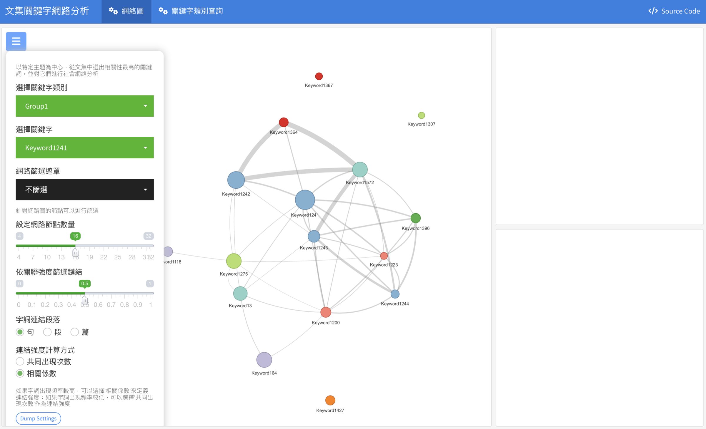
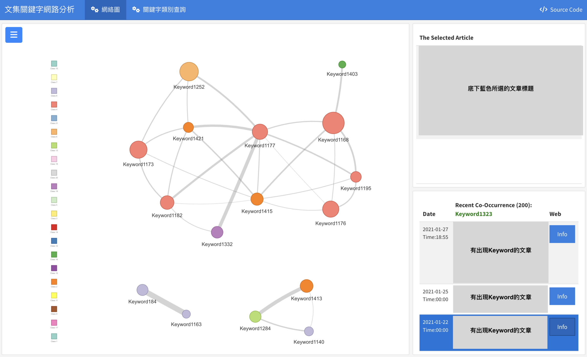
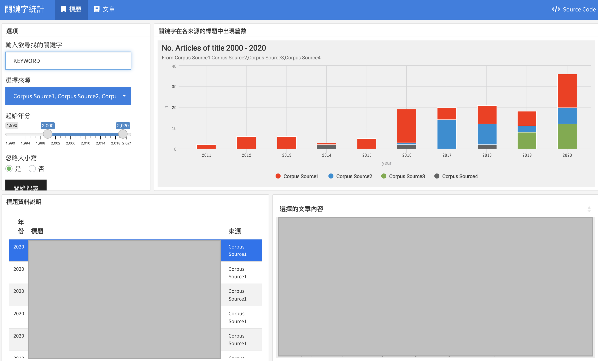
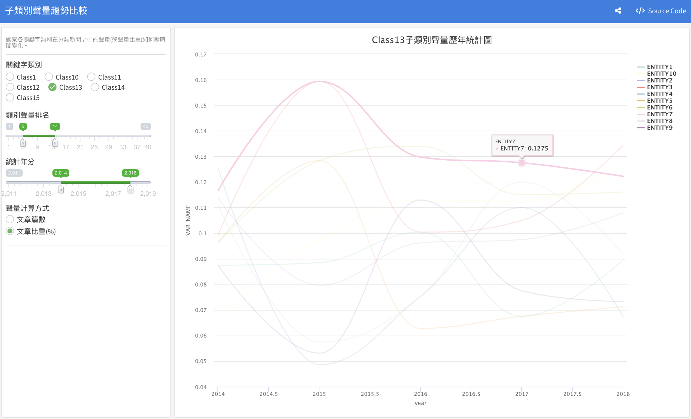

專案目標
透過大數據分析技術、建立數據儀表板來改善產業分析流程，並達到下列目標：
1.透過數據儀表可以更好的觀察文集資料中細節的資訊，並提供更全面的分析報告
2.透過互動來調整數據儀表板輸出並自動產生圖表，以改善分析流程
專案流程規劃
1.文集資料抓取(網路爬蟲)
2.文集資料處理(斷詞斷句、關鍵字提取、資料轉換(共現矩陣建構、其他數值資料))
3.開發數據儀表板、與跨部門使用人員進行溝通、調整儀表板
4.分析報告撰寫
專案結果呈現
此為自然語言處理分析專案中數據分析團隊所共同開發的各類數據儀表板，透過將文集資料進行tokenize，並建立字詞表、字詞共同出現矩陣，以進行各類分析，而儀表板的功能大致上可分為：探索、統計、趨勢分析
註：為了保護資料隱私，以將所有字詞進行去識別化，文章部分則進行屏蔽。
關鍵詞網路分析
在圖一，可以透過左邊面板可以選擇欲查看的關鍵字類別以及關鍵字的社會網絡，此外由額外設定可供選擇如呈現的網絡該有多少節點、共同出現的判別方式要以何種方式判定，選項有共同出現在同一句子、段落、篇幅。
 圖一點選後關鍵字後將呈現以該關鍵字為中心形成的網絡，如圖二所示，從圖二中可以觀察與該關鍵字相關的其他關鍵字以及關聯性強度，此外數據儀表板右邊則會呈現有出現該關鍵字的文章列表，並可透過點選右下角區塊進行互動，並在右上角顯示所點選文章的完整標題。
 圖二統計
在圖三中，可輸入欲尋找的關鍵字，並顯示出現該關鍵字的相關文章，並可互動透過點選左下角區塊(如出現藍色區域)的文章標題來選擇想查詢的文章，並呈現在儀表板，右上角則為關鍵字所出現文章的來源統計，該儀表板可用來做關鍵字文章的初步檢索以及來源統計。
 圖三趨勢分析
在圖四中，關鍵字類別為關鍵字的屬性(類別)，透過點選關鍵字類別來查看該類別底下的關鍵字集合的聲量時間趨勢，如：關鍵字的上升、下降趨勢，關鍵字的聲量大小程度。
 圖四